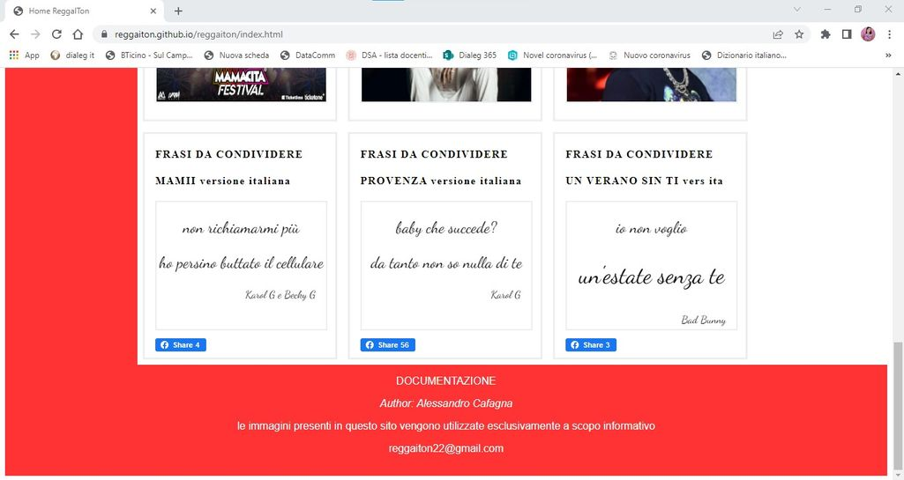

L’idea del progetto nasce da una ricerca approfondita fatta sul web, dalla quale è emersa una mancanza nel trattare il tema del reggaeton da una prospettiva italiana. Da qui nasce il progetto reggaITon, che vuole diffondere e approfondire la cultura musicale latina in Italia. Il titolo, attraverso un semplice gioco linguistico, vuole già indicare all’utente i contenuti che troverà all’interno del sito web, ovvero informazioni, news, classifica e frasi tipiche sul reggaeton, evidentemente trattate in lingua italiana.
La scelta del target è stata fatta dopo un’attenta analisi della concorrenza sul web. Si è notato che nonostante il genere reggaeton fosse in ascesa da anni in Italia, manca una piattaforma che raccolga tutti i contenuti sul genere musicale e che li esponga in italiano. L’ascesa è testimoniata sia dalla presenza costante nelle classifiche italiane di brani reggaeton, che da eventi / format sempre più frequenti in tutta Italia, solo per citarne qualcuno vida loca e mamacita.
1.1 Obiettivo: L’obiettivo è quello di catturare l’attenzione degli amanti della musica reggaeton in Italia attraverso la divulgazione di contenuti aggiornati come classifica, novità musicali, eventi, ecc. Inoltre, attraverso la condivisione di contenuti esclusivi, come la frasi tipiche delle canzoni si vuol fidelizzare l’utente. A lungo termine e tramite un aggiornamento costante del sito, si vuol diventare la piattaforma di riferimento sul genere in Italia.
1.2 Target Utente: Il target individuato è chiaramente il pubblico italiano amante della musica reggaeton. Particolare attenzione viene posta alle generazioni Z, millenial e Alpha più incline ad ascoltare questo genere musicale. L’attenzione a queste categorie ha polarizzato l’organizzazione del sito web, mettendo in evidenza il collegamento con i social youtube, spotify, instagram e facebook.
1.3 Competitors: L’analisi della concorrenza è stata scrupolosa. L’attenzione è stata rivolta ad un sito web in italiano «bloglatino.it» e un sito web in spagnolo «elgeneroofficial.com». Il primo raggiunge le 72,5K visite totali*, ha un’organizzazione dei contenuti ordinata e chiara ma ha una lacuna fondamentale, ovvero non parla solo di reggaeton, ma di attualità in genere, infatti nel suo menù di navigazione troviamo link a musica, cinema e sport. Il secondo raggiunge 316K visite totali*, ben organizzato, dedicato al reggaeton, ma il suo target è il pubblico ispanico in quanto tutto il sito è in lingua spagnola. *dati rilevati da similarweb.com
Il sito web è stato organizzato in base al target utente, in base al messaggio da veicolare e in base all’obiettivo da perseguire. I contenuti principali sono stati posti secondo la pattern F theory. Si è cercato di mantenere delle scelte coerenti a livello grafico in modo tale da preservarne l’identità.
2.1 Architettura del sito:
Dalla homepage è possibile visitare tutte le pagine secondarie, tra cui frasi da condividere, novità, classifiche, eventi e contatti. Il sito è stato organizzando con un menù inline posto nell’header, dei collegamenti ai social evidenziati a sinistra dello schermo e i contenuti organizzati in dei box contenitori.
2.2 Wireframe:
Ho individuato 3 tipologie di wireframe che hanno in comune il menù inline posto nell’header e il footer a fondo pagina.
Fig.1: La homepage e le pagine secondarie sono organizzate con un menù posto in alto, dei collegamenti ai social evidenziati a sinistra dello schermo e i contenuti organizzati in dei box contenitori in base al numero di news presenti.
Fig.2: Nella documentazione, troviamo il testo raggruppato in dei paragrafi per separare le sezioni semanticamente.
Fig.3: Il template del form contatti è stato estratto da w3schools.com, ha la stessa organizzazione del primo wireframe, ma al posto dei contenuti raggruppati in box, troviamo il modulo per essere contattati.
2.3 Look and feel: Per la scelta dei font ho utilizzato l'archivio messo a disposizione da google, ovvero google font. Ho optato per il "titillum web" per quanto concerne il testo in generale presente nel body, un font sans serif semplice che ne facilita la lettura. Per le frasi ricorrenti ho deciso invece di utilizzare un font più "artistico", di tipo serif, che sia d'impatto e più adatto a un contesto di frasi/citazioni, ovvero il "dancing". Per i titoli ho utilizzato "playfair", un serif con un weight intermedio e un letter space più ampio. La scelta dei colori è avvenuta considerando le palette presenti in "w3schools.com". Lo sfondo dell'header, della colonna dei collegamenti ai profili social e del footer sono stati fatti in una tonalità del rosso per fare un ancoraggio all'atmosfera latina (caliente).Tra gli elementi della pagina, ho voluto porre in evidenza, così come consigliato dalla pattern F theory, i collegamenti ai social in quanto parte integrante del progetto e sui quali troviamo le playlist dei brani scelti e i più ascoltati. Ovviamente il menù di navigazione è posto nell'header della pagina perchè considerato il "timone" del sito web.Tutte le news sono raccolte in delle box di tipo "float", utilizzando un posizionamento di tipo relative e delineate da confini. Le frasi sono semplici e brevi e le pagine sono anticipate da dei sottotitoli che guidano all'orientamento.
3.1 Linguaggi web utilizzati: HTML, CSS e Javascript.
3.2 Strumenti tecnologici a supporto della progettazione web:
- sublimetext2 come editor di testo;
- w3schools per la paletta dei colori e i template del menù e del form contatti;
- googlefont per la scelta dei font;
- github per pubblicare il sito;
- googleanalytics per il conteggio dei visitatori.
ReggaITon annovera sicuramente tra i suoi plus il fatto di essere un sito dedicato al mondo reggaiton in lingua italiana. Molti siti competitor sono generalisti, proprio come il sito web preso come benchmark, bloglatino.it. I siti dedicati solo al reggaeton sono in lingua spagnola, motivo che mi ha spinto all'idea di creare un sito dedicato in italiano.Altro plus del sito web è quello di suscitare emozioni attraverso la musica, condividendo frasi tipiche delle canzoni pronte per essere condivise sui social. Questo aspetto è una novità non ancora trovata in altri siti di musica.
In termini di comunicazione si vuole raggiungere l’utente italiano, concentrandosi sulle generazioni già citate e stupendoli con aggiornamenti costanti e contenuti esclusivi sfruttando l’F pattern per dare all’utente una priorità di lettura. Per pubblicizzare il sito si è pensato di creare dei profili social dedicati che possano indirizzare gli utenti a visitarlo. In particolare sono state create: - playlist su spotify e su youtube che corrisponde alla classifica del mese inserita sul sito; - profili facebook e instagram per condividere reel come tutorial del sito e per condividere le frasi tipiche.
Il sito è rivolto agli utenti italiani e vuole catturare l'attenzione tramite la condivisione di frasi "emozionali" tratte dai testi scelti, novità musicali e classifiche aggiornate. Il target utente specifico dal punto di vista generazionale è: - Generazione Z; - Millenial; - Alpha. Saranno trattati come target principali ai quali porre la massima attenzione. Il sito web vuole dare la giusta importanza a questo genere musicale, assolutamente in ascesa in Italia, riservare uno spazio assoluto e specifico all'interno di una piattaforma web e non essere trattato come uno dei tanti argomenti, insieme ad altri. In questa maniera ci si vuole differenziare dalle altre piattaforme che trattano l'argomento.
La promozione del sito web avviene grazie al collegamento con i canali social che creeranno l'engagement auspicato. Tramite la condivisione di contenuti sui profili social, si vogliono perseguire i seguenti obiettivi: - 100 visite totali alla homepage; - 25 condivisioni su facebook di una frase tipica; - 50 visite al reel condiviso come tutorial del sito su instagram; - 50 mi piace a un post di una frase condivisa su instagram. I canali social appena citati sono stati creati per lo scopo.
La valutazione dei risultati è misurabile grazie alla condivisione delle statistiche di googleanalytics per quanto riguarda le visualizzazioni web e tramite degli screenshot per quel che concerne l'interazione con i social.
- Visualizzazione homepage: obiettivo 100 - risultato 243; googleanalytics
- Condivisione su facebook di una frase tipica: obiettivo 25 - risultato 56;
- Visualizzazioni del reel creato su instagram (tutorial del sito): obiettivo 50 - risultato 117;
- Mi piace al post creato su instagram condividendo una frase tipica: obiettivo 50 - risultato 55;